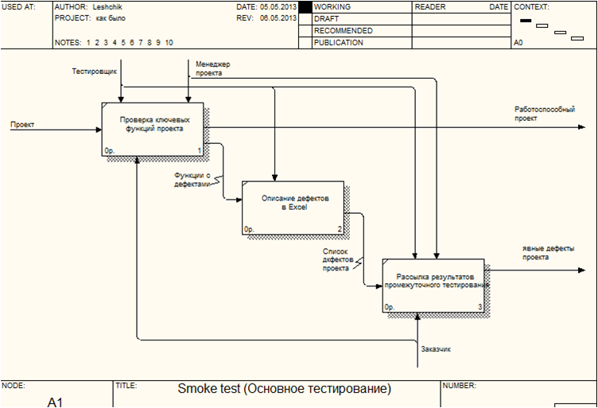
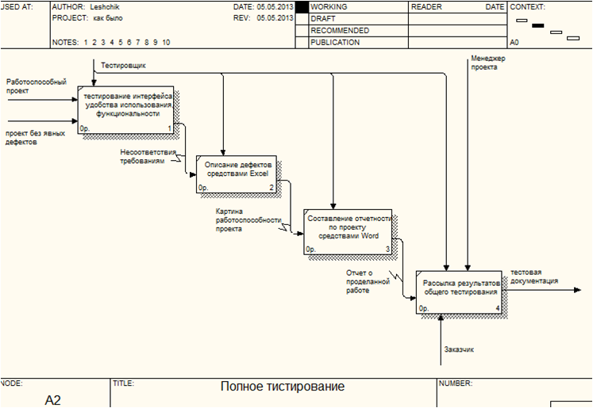

Отчет о прохождении информационной практики в компании Itransition
Подготовили
студенты ФМ, группы ДКИ:
Егор Жук
и Инна Лещик
О компании:
Itransition — международная ИТ-компания c 12-летней историей, предоставляющая весь комплекс услуг в сфере профессиональной разработки заказного программного обеспечения, системной интеграции, стратегического и технологического ИТ-консалтинга, тестирования, сопровождения и поддержки ПО, а также полного цикла веб-разработки.
Рейтинги:
- 100 лучших аутсорсинговых компаний мира(The 2010 Global Outsourcing 100).
- Itransition третий год подряд среди 500 крупнейших ИТ-компаний мирa
- Itransition - Золотой партнер Microsoft
- 100 ведущих мировых провайдеров услуг в области ИТ-аутсорсинга
Отдел разработки ИС


SD1 - занимается всевозможной работой, относящейся к разработке программного обеспечения, в том числе разработкой Web и standalone-приложений. Особенность проектов – их размер и сложность. В основном, тут реализовывают крупные, технологически сложные проекты (более 1 человеко-года), связанные с Java, .NET, SharePoint и другими технологиями промышленной разработки программного обеспечения.
Информационная инфраструктура предприятия - совокупность информационных центров, подсистем, банков данных и знаний, систем связи, центров управления, аппаратно-программных средств и технологий обеспечения сбора, хранения, обработки и передачи информации.
Связи между отделами:
Связи между отделами на диаграмме нотации IDEF0:
Портальные решения:
- единая точка доступа к информации
- возможность доступа к данным извне организации
- удобный графический пользовательский интерфейс доступный на любом устройстве
- доступ к информации осуществляется на основе ролей и четко контролируется
- портальные решения идеально подходят для автоматизация рутинных операций
- использование корпоративных порталов облегчает создание условий для самостоятельного повышения квалификации и удаленное обучение внутри компании
- корпоративная культура
Связи между отделами после внедрения портала:
Связи между отделами после внедрения портала (IDEF0):
Бизнес-процесс: «Работа с дефектами в системе отслеживания ошибок Jira»
JIRA cистема отслеживания ошибок (bug tracking system) — прикладная программа, разработанная с целью помочь разработчикам программного обеспечения (программистам, тестировщикам и др.) учитывать и контролировать ошибки (баги), найденные в программах, пожелания пользователей, а также следить за процессом устранения этих ошибок и выполнения или невыполнения пожеланий.
Контекстная диаграмма «Работа с дефектами»:
Диаграмма бизнес-процесса «Работа с дефектами»:
Бизнес-процесс до (слева) и после (справа) внедрения баг-трекинговой системы Jira:
Диаграмма декомпозиции работы «Smoke test (Основное тестирование)»
Диаграмма декомпозиции работы «Smoke test (Основное тестирование)» с использованием Jira
Диаграмма декомпозиции работы «Полное тестирование»:
Диаграмма декомпозиции работы «Полное тестирование» с использованием Jira:
Диаграмма декомпозиции работы «Исправление дефектов (in progress)»:
Диаграмма декомпозиции работы «Исправление дефектов (In progress)» с использованием Jira:
Диаграмма декомпозиции работы «Контроль исправления (Resolved)»:
Диаграмма декомпозиции работы «Контроль исправления (Resolved)» с использованием Jira:
Преимущества существующего бизнес-процесса «Работа с дефектами в системе отслеживания ошибок Jira»:
- сокращение временных затрат при описании дефектов;
- минимизация ручного труда;
- систематизация дефектов по проекту;
- легкое составление отчетности
- прозрачность бизнес-процесса
- мгновенная сортировка по заданному критерию
- возможность работать удаленно
- возможность работать параллельно (не требуется ожидать завершения целого процесса)
- удобство отслеживания текущего статуса дефекта
- возможность удобного поиска